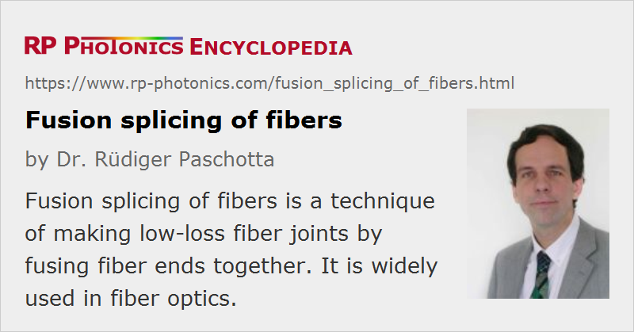

Fusion Splicing of Fibers
Definition: a technique of making low-loss fiber joints by fusing fiber ends together
More general term: splicing of fibers
German: Spleißen von Fasern
Category: fiber optics and waveguides
How to cite the article; suggest additional literature
Author: Dr. Rüdiger Paschotta
The principle of fusion splicing is that the two bare fiber ends (with coatings removed) are fused together under the influence of heat. More precisely, the fiber ends are initially brought in close contact, with a small gap in between. After heating them for a short while such that the surfaces melt, they are pushed together, such that the ends fuse together.
The heating is often accomplished with a high-voltage electric discharge, but there are other methods: an electrically heated nickel-chrome wire, a CO2 laser, or a gas flame.
Surface tension helps to achieve a good alignment, if the fiber cores are on the fiber axes. It is also possible to precisely align the fibers before the splicing such that the cores (even when they are slightly off-center) match well, but there is a risk that surface tension will pull the fiber ends toward a position where the total areas (rather than the cores) are matched.
Splicing of multimode fibers is rather uncritical. Here, substantial transition losses are to be expected only when the fiber parameters are not well matched, e.g., if the core areas are rather different. For single-mode fibers, the process is more critical. Here, the ideal conditions for reliable low-loss splices are:
- The fibers are silica fibers. Not all other glass materials are suitable for fusion splicing.
- The parameters of the fusion splicer (in particular, the electric current and duration of the arc) are well optimized for the given fiber type (material and diameter).
- The fibers have equal cladding diameters.
- The fiber coating is fully removed, possibly using a solvent.
- The fiber ends are well prepared, with exactly perpendicular cuts, no surface irregularities and no dust. A carefully done fiber cleave (done with some fiber cleaver device) should normally be good enough. Polishing leads to the highest surface quality and angular accuracy, but is more time-consuming.
- The fiber cores are exactly on the fiber axes, and the alignment is precise. (It is often observed under a microscope.)
- The effective mode areas are the same and not too small.
Under ideal conditions, fusion splices quite reliably exhibit very low transition losses of the order of 0.02 dB. Nearly no light will be reflected at the splice. The splice location can then hardly been seen under a microscope. Nevertheless, the mechanical strength of the splice and its surroundings may be well below that of the normal bare fiber, if the fiber surface receives some damage during handling; very small scratches are sufficient for that effect. Note that the protective coating has to be removed for splicing, and that this removal process carries a risk of damaging the fiber surface. After splicing, it is common to apply a new coating or attach some other protective material (e.g., a heat shrink protector or a mechanical crimp protector) in order to obtain a sufficiently high mechanical robustness.
Low-loss splices may also be achieved under non-ideal conditions, e.g. for fibers with different diameters. When the fiber cores are not centered, it may be necessary to do the alignment while monitoring the throughput of light. In such cases, however, the splicing process may be less reliable and needs more care. A substantial fraction of the splices may have to be redone until a satisfactory result is achieved.
After fusion splicing, one often uses a splice protection sleeve to protect the spliced region. Note that the stripped fiber is less robust and therefore often needs some extra protection.
Features of Fusion Splicers
An apparatus suitable for high-quality fusion splices will usually have the following features:
- Carefully engineered fiber clamps allow the precise fixing of the fiber ends. At least one clamp is precisely adjustable with micrometer screws.
- For splicing polarization-maintaining fibers, it is also necessary to rotate one of the fibers around its axis.
- A microscope allows inspection of quality and alignment of the fiber ends. Often, there is a knob for switching between two orthogonal directions of view. The fiber cores can also usually be seen.
- A “prefuse”, applied without touching the fibers, allows one to clean the surfaces.
Some special features:
- Some splicers do the alignment automatically based on a camera image and/or on monitoring the optical power throughput. For the latter, there must be a light source attached to one fiber end, and a photodetector for the other one.
- Some devices can also measure the quality of the resulting splice.
- While some fusion splicers are specialized for standard telecom fibers, others can be used for a wider range of fibers, e.g. with smaller or larger cladding diameters. For example, there are swing-electrode based fusion techniques which are suitable for large cladding fibers.
- Some devices simply offer a higher accuracy, as required e.g. for splicing fibers for space division multiplexing.
Testing Fusion Splices
A first test of a splice is the inspection with the microscope of the splicer apparatus. Normally, one should hardly be able to see the splice. Nevertheless, there may be a problem e.g. resulting from an offset of the fiber cores.
When visible light is launched into the fiber, a lot of stray light can result at a faulty splice, which is thus easy to recognize, although that does not deliver a quantitative measure of the splice quality.
A precise measurement of a splice loss is helpful, but not easy. That starts with the challenge of launching a precisely known amount of optical power into the fiber, and continues with measuring the output power with a precision of 0.1 dB, for example.
Optical time-domain reflectometry (OTDR) is often used for checking fiber cables including splices. At least serious faults are easily recognized and located with that technique. However, this requires an expensive OTDR apparatus.
Advantages and Limitations of Fusion Splicing
In comparison with other techniques for making fiber joints, fusion splicing has some substantial advantages:
- No other method promises lower transition losses and weaker reflections.
- The resulting joints are very stable, i.e., no alignment needs to be maintained, and no dust can affect the joint.
- No parts or materials are required, except for protecting the fiber after splicing.
Some non-ideal aspects of fusion splicing are:
- An apparatus for fusion splicing is fairly expensive, and its use requires adequate training.
- Compared to equipment for mechanical splices, for example, it is more difficult to use in the field, as it is less compact and requires electricity.
- Connections are not easy to remove. Essentially, a new cleave would be required, possibly followed by surface preparation.
Note also that in high-power fiber lasers and amplifiers the power of light lost in splices can be sufficient for burning materials, in particular fiber coatings. This means that high-quality splices are essential not only for the power efficiency, but also for reliable operation.
The use of fusion splices is common for outdoor fiber cables; long cables are usually made by fusion-splicing fiber cables together, each one having a length of a few kilometers. For indoor transmission cables, one usually uses mechanical splices or fiber connectors, avoiding the use of expensive fusion splicers. Fusion splicing is also used in factories for making stable fiber-optic devices such as fiber lasers and amplifiers.
Suppliers
The RP Photonics Buyer's Guide contains 22 suppliers for fusion splicers.
Questions and Comments from Users
Here you can submit questions and comments. As far as they get accepted by the author, they will appear above this paragraph together with the author’s answer. The author will decide on acceptance based on certain criteria. Essentially, the issue must be of sufficiently broad interest.
Please do not enter personal data here; we would otherwise delete it soon. (See also our privacy declaration.) If you wish to receive personal feedback or consultancy from the author, please contact him e.g. via e-mail.
By submitting the information, you give your consent to the potential publication of your inputs on our website according to our rules. (If you later retract your consent, we will delete those inputs.) As your inputs are first reviewed by the author, they may be published with some delay.
Bibliography
| [1] | Y. Kohanzadeh, “Hot splices of optical waveguide fibers”, Appl. Opt. 15 (3), 793 (1976), doi:10.1364/AO.15.000793 |
| [2] | A. D. Yablon, Optical Fiber Fusion Splicing, Springer, New York (2005) |
See also: fibers, fiber joints, cleaving of fibers
and other articles in the category fiber optics and waveguides
|  |
If you like this page, please share the link with your friends and colleagues, e.g. via social media:
These sharing buttons are implemented in a privacy-friendly way!